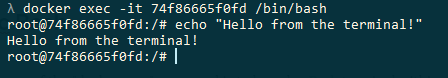
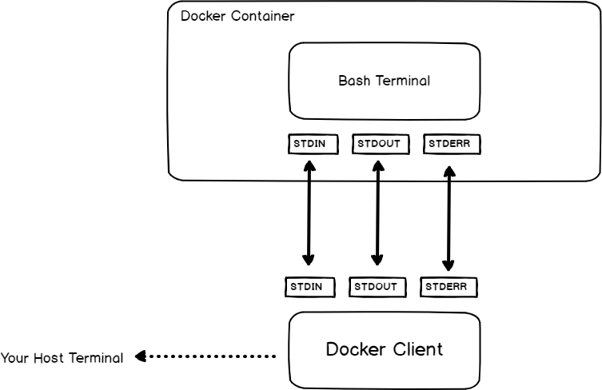

Exec Docker Command
Exec Docker Command
Luckily, there is a command that you can use in order to execute commands on running containers : docker exec.
In this tutorial, we are going to focus on the docker exec command.
Docker Exec Syntax
In order to execute commands on running containers, you have to execute “docker exec” and specify the container name (or ID) as well as the command to be executed on this container.
$ docker exec <options> <container> <command>
As an example, let’s say that you want to execute the “ls” command on one of your containers.
The first thing that you need to do is to identify the container name (if you gave your container one) or the container ID.
In order to determine the container name or ID, you can simply execute the “docker ps” command.
$ docker ps
CONTAINER ID IMAGE COMMAND CREATED STATUS
74f86665f0fd ubuntu:18.04 "/bin/bash" 49 seconds ago Up 48 seconds
Note : the “docker ps” is also used in order to determine whether a container is running or not.
As you can see, the container ID is the first column of the ‘docker ps’ output.
Now, to execute the “ls” command on this container, simply append the ‘ls’ command to the ID of your container.
$ docker exec 74f86665f0fd ls
bin
boot
dev
etc
home
Awesome, now that you know how you can use the “docker exec” command, let’s see some custom examples on usage of this command.
Docker Exec Bash
The most popular usage of the “docker exec” command is to launch a Bash terminal within a container.
In order to start a Bash shell in a Docker container, execute the “docker exec” command with the “-it” option and specify the container ID as well as the path to the bash shell.
If the Bash is part of your PATH, you can simply type “bash” and have a Bash terminal in your container.
$ docker exec -it <container> /bin/bash
# Use this if bash is part of your PATH
$ docker exec -it <container> bash
When executing this command, you will have an interactive Bash terminal where you can execute all the commands that you want.

Awesome, you are now running an interactive Bash terminal within your container.
As you can see, we used an option that we did not use before to execute our command : the I and T options.
What is the purpose of those options?
Docker Exec Interactive Option (IT)
If you are familiar with Linux operating systems, you have probably already heard about the concept of file descriptors.
Whenever you are executing a command, you are creating three file descriptors :
- STDIN : also called the standard input that will be used in order to type and submit your commands (for example a keyboard, a terminal etc..);
- STDOUT : called the standard output, this is where the process outputs will be written (the terminal itself, a file, a database etc..);
- STDERR : called the standard error, it is very related to the standard output and is used in order to display errors.
So how are file descriptors related to the “docker exec“?
When running “docker exec” with the “-i” option, you are binding the standard input of your host to the standard input of the process you are running in the container.
In order to get the results from your command, you are also binding the standard output and the standard error to the ones from your host machine.

As you are binding the standard input from your host to the standard input of your container, you are running the command “interactively”.
If you don’t specify the “IT” option, Bash will still get executed in the container but you won’t be able to submit commands to it.
Docker Exec as Root
In some cases, you are interested in running commands in your container as the root user.
In order to execute a command as root on a container, use the “docker exec” command and specify the “-u” with a value of 0 for the root user.
$ docker exec -u 0 <container> <command>
For example, in order to make sure that we execute the command as root, let’s have a command that prints the user currently logged in the container.
$ docker exec -u 0 74f86665f0fd whoami
root
Great, you are now able to run commands as the root user within a container with docker exec.
Docker Exec Multiple Commands
In order to execute multiple commands using the “docker exec” command, execute “docker exec” with the “bash” process and use the “-c” option to read the command as a string.
$ docker exec <container> bash -c "command1 ; command2 ; command3"
Note : simple quotes may not work in your host terminal, you will have to use double quotes to execute multiple commands.
For example, let’s say that you want to change the current directory within the container and read a specific log file in your container.
To achieve that, you are going to execute two commands : “cd” to change directory and “cat” to read the file content.
$ docker exec 74f86665f0fd bash -c "cd /var/log ; cat dmesg "
(Nothing has been logged yet.)
Executing a command in a specific directory
In some cases, the purpose of executing multiple commands is to navigate to a directory in order to execute a specific command in this directory.
You can use the method we have seen before, but Docker provides a special option for this.
In order to execute a command within a specific directory in your container, use “docker exec” with the “-w” and specify the working directory to execute the command.
$ docker exec -w /path/to/directory <container> <command>
Given the example we have seen before, where we inspected the content of a specific log file, it could be shortened to
$ docker exec -w /var/log 74f86665f0fd cat dmesg
(Nothing has been logged yet.)
Docker Run vs Exec
Now that we have seen multiple ways of using the “docker exec” command, you may wonder what is the difference with the “docker run” command.
The difference between “docker run” and “docker exec” is that “docker exec” executes a command on a running container. On the other hand, “docker run” creates a temporary container, executes the command in it and stops the container when it is done.
For example, you can execute a Bash shell using the “docker run” command but your container will be stopped when exiting the Bash shell.
$ docker run -it ubuntu:18.04 bash
root@b8d2670657e3:/# exit
$ docker ps
(No containers.)
On the other hand, if a container is started, you can start a Bash shell in it and exit it without the container stopping at the same time.
$ docker ps
CONTAINER ID IMAGE COMMAND CREATED STATUS
74f86665f0fd ubuntu:18.04 "/bin/bash" 49 seconds ago Up 48 seconds
$ docker exec -it 74f86665f0fd bash
root@74f86665f0fd:/# exit
$ docker ps
CONTAINER ID IMAGE COMMAND CREATED STATUS
74f86665f0fd ubuntu:18.04 "/bin/bash" 58 seconds ago Up 58 seconds
Awesome, you know the difference between “docker run” and “docker exec” now.
Set Environment Variables
Setting environment variables is crucial for Docker : you may run databases that need specific environment variables to work properly.
Famous examples are Redis, MongoDB or MySQL databases.
In order to set environment variables, execute “docker exec” with the “-e” option and specify the environment variable name and value next to it.
$ docker exec -e var='value' <container> <command>
As an example, let’s have a command that sets the “UID” environment variable just to print it out within the container.
To achieve that, we would use the “-e” option in order to set the environment variable.
$ docker exec -e UID='myuser' 74f86665f0fd printenv UID
'myuser'